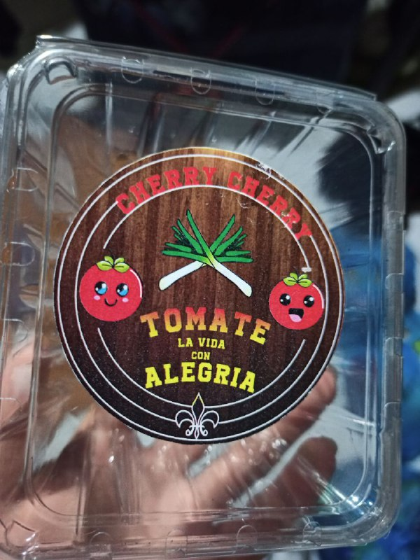

Este proyecto consiste en el que nosotros nos dedicamos a realizar alguna actividad para generar dinero, en mi caso fue la siembra y cosecha del tomate Cherry, con el que planea venderlo, para esto se diseño un molde para poner el producto, una marca, etc.
Este proyecto me enseño algo de agricultura y comprender que el trabajo de agricultor es muy complicado, por lo que si es necesario de personas de personas que sean expertas en este tipo de tareas que requieren un buen conocimiento.

Las habilidades que conseguí es la de estar pendiente, ya que esto necesito que le ponga atención a las plantas desde que las comencé a sembrar, ya que requerían de un riego y ver que no existiera algún animal comiéndose la planta, las habilidades de investigación que tuve que aplicar para conocer cual es el cuidado que se le debe dar a este tipo de plantas, que me permita conocer las mejores formas de cuidarla.